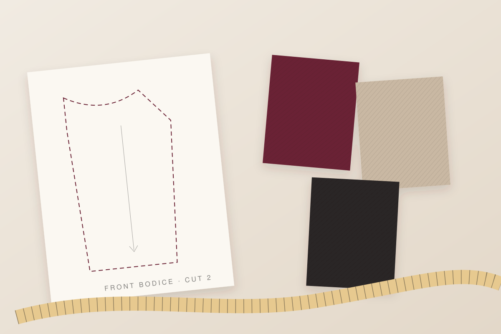
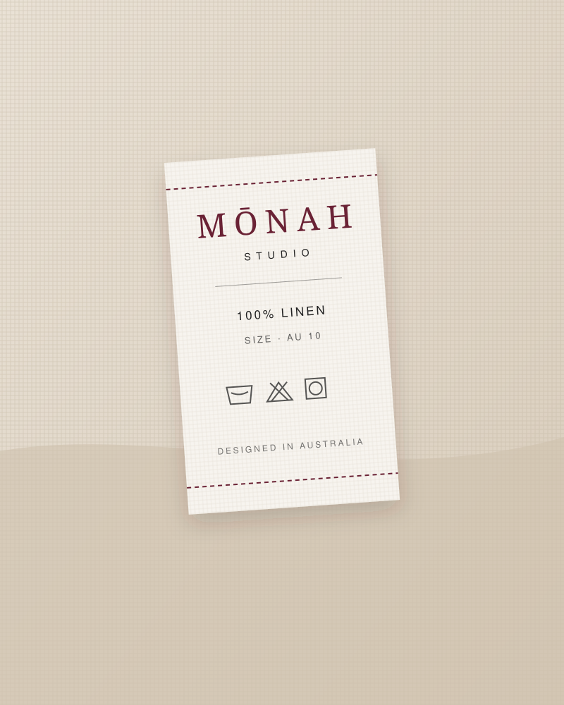

- Why it mattersVì sao quan trọng
- Composition affects price, care and comfort, so an inaccurate claim can lead a customer to buy something different from what they expected.Thành phần vải ảnh hưởng đến giá, cách bảo quản và cảm giác khi mặc, nên thông tin sai có thể khiến khách mua một sản phẩm khác với kỳ vọng.
- SafeguardBiện pháp phòng ngừa
- Copy composition only from supplier test reports; keep the report on file for every style.Chỉ ghi thành phần dựa trên báo cáo kiểm nghiệm của nhà cung cấp; lưu báo cáo cho từng mẫu.
Case Study · Australian Business Law Nghiên cứu tình huống · Luật kinh doanh Úc
Designing a Startupwith a StrongLegal Foundation Kiến tạo một Startuptrên Nền tảngPháp lý Vững chắc
MŌnah Studio is an independent womenswear label. This editorial edition presents its academic case study — how the business is structured, registered, contracted and protected — beside clearly marked supplementary research for its online store. MŌnah Studio là một thương hiệu thời trang nữ độc lập. Ấn bản này trình bày bài nghiên cứu tình huống học thuật của thương hiệu — cách doanh nghiệp được lựa chọn cơ cấu, đăng ký, ký kết hợp đồng và phòng ngừa rủi ro — cùng phần nghiên cứu bổ sung được đánh dấu rõ ràng dành cho cửa hàng trực tuyến.
Source statusTình trạng nguồn
The original report text has not yet been added. The report file was not available when this edition was built, so sections 01–06 and the nine original references are laid out as clearly labelled slots. No report wording, citation or reference has been invented. Add the report's text to js/report-content.js (see README) and every slot fills automatically in both languages.
Nội dung báo cáo gốc chưa được bổ sung. Tệp báo cáo chưa có sẵn khi ấn bản này được xây dựng, vì vậy các phần 01–06 và chín tài liệu tham khảo gốc được trình bày dưới dạng các ô chờ có ghi chú rõ ràng. Không có câu chữ, trích dẫn hay tài liệu tham khảo nào của báo cáo bị tự ý tạo ra. Hãy thêm nội dung báo cáo vào js/report-content.js (xem README), mọi ô sẽ tự động hiển thị ở cả hai ngôn ngữ.
How to read this editionCách đọc ấn bản này
Original ReportBáo cáo gốc
The source documentTài liệu nguồn
Sections 01–06 and the nine original references, reproduced faithfully with their original in-text citations.Các phần 01–06 và chín tài liệu tham khảo gốc, được trình bày trung thực cùng các trích dẫn trong bài.
Additional ResearchNghiên cứu bổ sung
Additional legal considerationsCác vấn đề pháp lý bổ sung
New research on privacy, online store terms, ABN, ACN and GST — checked against official Australian government sources. Not part of the original submission.Nghiên cứu mới về quyền riêng tư, điều khoản cửa hàng trực tuyến, ABN, ACN và GST — được đối chiếu với nguồn chính thức của chính phủ Úc. Không thuộc bài nộp gốc.
Website RecommendationKhuyến nghị cho website
Practical design suggestionsGợi ý thiết kế thực tiễn
Checklists, risk cards and sample footer links. Illustrative tools — not legal advice, not a guarantee of compliance, and not quotations from the report.Danh mục kiểm tra, thẻ rủi ro và chân trang mẫu. Đây là công cụ minh hoạ — không phải tư vấn pháp lý, không bảo đảm tuân thủ và không trích từ báo cáo.
Original ReportBáo cáo gốc
Introduction & Chosen ScenarioGiới thiệu & Tình huống lựa chọn
Original ReportBáo cáo gốc
Business Structure: Pty Ltd versus Sole TraderCơ cấu doanh nghiệp: Pty Ltd và Sole Trader

A label is only as strong as the structure beneath it. Một thương hiệu chỉ vững vàng khi cấu trúc bên dưới nó vững vàng. Editorial note · not a quotation from the reportGhi chú biên tập · không trích từ báo cáo
Original ReportBáo cáo gốc
Business Registration & Manufacturing ContractsĐăng ký kinh doanh & Hợp đồng sản xuất
Website Recommendation · InteractiveKhuyến nghị cho website · Tương tác
Supplier-contract checklistDanh mục kiểm tra hợp đồng với nhà cung cấp
A working aid for reviewing a manufacturing agreement before signing. Tick each term once it is written into the contract.Công cụ hỗ trợ rà soát hợp đồng sản xuất trước khi ký. Đánh dấu từng điều khoản khi điều khoản đó đã được ghi vào hợp đồng.
0/0
Illustrative website component prepared for this edition. It is not drawn from the original report, is not legal advice and does not guarantee a contract is complete. Ticks are saved only in this browser.Thành phần website minh hoạ được chuẩn bị cho ấn bản này. Nội dung không lấy từ báo cáo gốc, không phải tư vấn pháp lý và không bảo đảm hợp đồng đã đầy đủ. Các lựa chọn chỉ được lưu trên trình duyệt này.
Original ReportBáo cáo gốc
Legal Risks: Misleading Product InformationRủi ro pháp lý: Thông tin sản phẩm gây hiểu lầm
Website Recommendation · InteractiveKhuyến nghị cho website · Tương tác
Risk analysis: where product information can misleadPhân tích rủi ro: thông tin sản phẩm có thể gây hiểu lầm ở đâu
Select a card to see why the risk matters and a practical safeguard. Australian consumer law guidance tells businesses to give customers truthful information about their goods and to meet promises they make about quality or standard [S8].Chọn một thẻ để xem vì sao rủi ro đó quan trọng và biện pháp phòng ngừa thực tế. Hướng dẫn về luật bảo vệ người tiêu dùng Úc yêu cầu doanh nghiệp cung cấp thông tin trung thực về hàng hoá và thực hiện đúng những cam kết về chất lượng hay tiêu chuẩn [S8].
- Why it mattersVì sao quan trọng
- Origin is a common reason customers choose a local label; overstating it trades on a quality the product does not have.Xuất xứ là lý do phổ biến khiến khách chọn thương hiệu nội địa; phóng đại xuất xứ là lợi dụng một giá trị mà sản phẩm không có.
- SafeguardBiện pháp phòng ngừa
- Use precise wording such as “Designed in Australia, made in [country]”, matched to supplier records.Dùng cách diễn đạt chính xác như “Thiết kế tại Úc, sản xuất tại [quốc gia]”, khớp với hồ sơ của nhà cung cấp.
- Why it mattersVì sao quan trọng
- Broad environmental or ethical claims are hard for customers to verify, so vague wording can easily overstate reality.Khách hàng khó kiểm chứng các tuyên bố chung chung về môi trường hay đạo đức, nên câu chữ mơ hồ dễ phóng đại thực tế.
- SafeguardBiện pháp phòng ngừa
- Make specific claims only (for example, the certified fibre used) and hold supplier evidence for each one.Chỉ đưa ra tuyên bố cụ thể (ví dụ: loại sợi đã được chứng nhận) và lưu bằng chứng từ nhà cung cấp cho từng tuyên bố.
- Why it mattersVì sao quan trọng
- Online shoppers cannot try garments on, so they rely entirely on the published measurements.Người mua trực tuyến không thể thử đồ, nên họ hoàn toàn dựa vào số đo được công bố.
- SafeguardBiện pháp phòng ngừa
- Measure production samples against the tech pack before publishing each size guide.Đo mẫu sản xuất đối chiếu với tech pack trước khi đăng bảng size.
- Why it mattersVì sao quan trọng
- For fashion, images are often the main product information a customer relies on.Với thời trang, hình ảnh thường là thông tin sản phẩm chính mà khách hàng dựa vào.
- SafeguardBiện pháp phòng ngừa
- Set a retouching guideline and add a note where colours may vary between screens.Đặt quy tắc chỉnh sửa ảnh và ghi chú rằng màu sắc có thể khác nhau giữa các màn hình.
- Why it mattersVì sao quan trọng
- A reference price signals a saving; if the saving is not real, the claim is not truthful.Giá tham chiếu ngụ ý khách đang được tiết kiệm; nếu khoản tiết kiệm không có thật, tuyên bố đó không trung thực.
- SafeguardBiện pháp phòng ngừa
- Keep a pricing history and only show “was” prices that were genuinely charged.Lưu lịch sử giá và chỉ hiển thị “giá gốc” đã thực sự được áp dụng.
- Why it mattersVì sao quan trọng
- A store policy cannot override consumer guarantee rights, such as with “no refunds” signs [S8].Chính sách của cửa hàng không thể gạt bỏ quyền được bảo đảm của người tiêu dùng, ví dụ như các biển “không hoàn tiền” [S8].
- SafeguardBiện pháp phòng ngừa
- Limit sale exclusions to change-of-mind returns only — see B2.Chỉ áp dụng ngoại lệ hàng giảm giá cho trường hợp đổi ý — xem B2.
Illustrative risk scenarios prepared for this edition; not taken from the original report and not legal advice.Các tình huống rủi ro minh hoạ được chuẩn bị cho ấn bản này; không lấy từ báo cáo gốc và không phải tư vấn pháp lý.

The smallest label carries the largest promise. Chiếc nhãn nhỏ nhất mang lời hứa lớn nhất. Editorial note · not a quotation from the reportGhi chú biên tập · không trích từ báo cáo
Original ReportBáo cáo gốc
Risk Management RecommendationsKhuyến nghị Quản trị rủi ro
Original ReportBáo cáo gốc
ConclusionKết luận
Additional Research · Not part of the original reportNghiên cứu bổ sung · Không thuộc báo cáo gốc
Additional Legal Considerations Các vấn đề pháp lý bổ sung
This extension adds three considerations for MŌnah Studio's online store: customer privacy, online terms and consumer rights, and business identity (ABN, ACN and GST). Each claim was checked against official Australian government sources, listed separately under Supplementary references.Phần mở rộng này bổ sung ba vấn đề cho cửa hàng trực tuyến của MŌnah Studio: quyền riêng tư của khách hàng, điều khoản bán hàng trực tuyến và quyền lợi người tiêu dùng, cùng danh tính doanh nghiệp (ABN, ACN và GST). Mỗi nhận định đều được đối chiếu với nguồn chính thức của chính phủ Úc, liệt kê riêng tại mục Tài liệu tham khảo bổ sung.
Throughout, Legal obligation marks a requirement that applies when its conditions are met; Recommended practice marks good practice that is not, in itself, a legal requirement.Trong toàn bộ phần này, Nghĩa vụ pháp lý chỉ yêu cầu bắt buộc khi đáp ứng các điều kiện liên quan; Thực hành khuyến nghị chỉ thông lệ tốt, tự thân không phải là yêu cầu pháp lý.
Additional ResearchNghiên cứu bổ sung
Customer Privacy & Data Protection Quyền riêng tư và bảo vệ dữ liệu khách hàng
An online store gathers personal information as a matter of course. To take and deliver an order, MŌnah Studio may collect customer names, delivery addresses, email addresses and phone numbers, order histories, and payment-related information. Whether the Privacy Act 1988 (Cth) applies to that information depends on the business's actual circumstances.
Cửa hàng trực tuyến đương nhiên phải thu thập thông tin cá nhân. Để nhận và giao đơn hàng, MŌnah Studio có thể thu thập họ tên, địa chỉ giao hàng, email, số điện thoại, lịch sử đơn hàng và thông tin liên quan đến thanh toán của khách hàng. Việc Privacy Act 1988 (Cth) (Đạo luật Quyền riêng tư 1988) có áp dụng cho các thông tin này hay không phụ thuộc vào hoàn cảnh thực tế của doanh nghiệp.
Is MŌnah Studio covered by the Privacy Act?MŌnah Studio có thuộc phạm vi điều chỉnh của Privacy Act không?
Not automatically. The Office of the Australian Information Commissioner (OAIC) explains that most small businesses are not covered by the Privacy Act, but some are. A small business, for this purpose, is one with an annual turnover of $3 million or less, and annual turnover includes all income from all sources [S1]. A business that has not yet operated for a whole financial year must project its full-year turnover [S1].
Không mặc nhiên. Văn phòng Ủy viên Thông tin Úc (OAIC) giải thích rằng phần lớn doanh nghiệp nhỏ không thuộc phạm vi của Privacy Act, nhưng một số thì có. Theo mục đích này, doanh nghiệp nhỏ là doanh nghiệp có doanh thu hằng năm từ 3 triệu đô la Úc trở xuống, và doanh thu hằng năm bao gồm mọi khoản thu nhập từ mọi nguồn [S1]. Doanh nghiệp chưa hoạt động đủ một năm tài chính phải ước tính doanh thu cả năm [S1].
Regardless of turnover, the Act covers a business that falls into certain categories, including [S1]:
Bất kể doanh thu, Đạo luật vẫn áp dụng cho doanh nghiệp thuộc một số nhóm nhất định, bao gồm [S1]:
- a business trading in personal information (for example, selling a customer list)
- a business related to a business the Privacy Act covers
- a health service provider
- a contractor providing services under a Commonwealth contract
- a credit reporting body
- a reporting entity under the Anti-Money Laundering and Counter-Terrorism Financing Act 2006
- a business accredited under the Consumer Data Right system
- a business prescribed by the Privacy Regulation 2013
- a business that has opted in to be covered
- doanh nghiệp mua bán thông tin cá nhân (ví dụ: bán danh sách khách hàng)
- doanh nghiệp có liên quan đến một doanh nghiệp thuộc phạm vi của Privacy Act
- đơn vị cung cấp dịch vụ y tế
- nhà thầu cung cấp dịch vụ theo hợp đồng với Chính phủ Liên bang
- tổ chức báo cáo tín dụng
- đơn vị có nghĩa vụ báo cáo theo Anti-Money Laundering and Counter-Terrorism Financing Act 2006
- doanh nghiệp được công nhận theo hệ thống Consumer Data Right
- doanh nghiệp được quy định tại Privacy Regulation 2013
- doanh nghiệp tự nguyện lựa chọn chịu sự điều chỉnh (opt in)
The OAIC lists further categories, and its Privacy Checklist for Small Business is a starting point; it states that the checklist is not a substitute for legal advice [S1]. For MŌnah Studio, the realistic triggers to assess are its turnover, whether it is related to a larger covered company, and whether it would ever disclose customer data for a benefit.
OAIC còn liệt kê thêm các nhóm khác, và Danh mục kiểm tra quyền riêng tư dành cho doanh nghiệp nhỏ của OAIC là điểm khởi đầu; OAIC nêu rõ danh mục này không thay thế cho tư vấn pháp lý [S1]. Với MŌnah Studio, các yếu tố thực tế cần đánh giá là doanh thu, việc có liên quan đến một công ty lớn hơn thuộc phạm vi điều chỉnh hay không, và việc có bao giờ tiết lộ dữ liệu khách hàng để đổi lấy lợi ích hay không.
Legal obligation · if coveredNghĩa vụ pháp lý · nếu thuộc phạm vi
Australian Privacy PrinciplesCác Nguyên tắc Quyền riêng tư Úc
A covered business must comply with the Australian Privacy Principles (APPs) [S1]. These include having a clearly expressed and up-to-date privacy policy (APP 1), telling individuals about collection (APP 5), taking reasonable steps to protect information (APP 11), and handling requests for access and correction (APPs 12–13) [S2]. Individuals may complain, and the OAIC can investigate [S1].Doanh nghiệp thuộc phạm vi điều chỉnh phải tuân thủ các Nguyên tắc Quyền riêng tư Úc (APP) [S1]. Các nguyên tắc này bao gồm việc có chính sách quyền riêng tư rõ ràng và cập nhật (APP 1), thông báo cho cá nhân về việc thu thập thông tin (APP 5), thực hiện các bước hợp lý để bảo vệ thông tin (APP 11) và xử lý yêu cầu truy cập, chỉnh sửa thông tin (APP 12–13) [S2]. Cá nhân có quyền khiếu nại và OAIC có thể điều tra [S1].
Recommended practice · if not coveredThực hành khuyến nghị · nếu không thuộc phạm vi
Best practice regardlessThông lệ tốt trong mọi trường hợp
Where a small business is not covered, the OAIC still recommends, as a matter of best practice, protecting any personal information it holds, and suggests considering opting in, noting benefits such as increased consumer confidence and trust [S1].Khi doanh nghiệp nhỏ không thuộc phạm vi điều chỉnh, OAIC vẫn khuyến nghị — như một thông lệ tốt — bảo vệ mọi thông tin cá nhân mà doanh nghiệp nắm giữ, đồng thời gợi ý cân nhắc tự nguyện tham gia, với lợi ích như tăng sự tin tưởng của người tiêu dùng [S1].
Privacy practices for the online storeThực hành quyền riêng tư cho cửa hàng trực tuyến
The six practices below follow the APPs. They are legal obligations if MŌnah Studio is covered, and recommended practice if it is not.Sáu thực hành dưới đây dựa theo các APP. Đây là nghĩa vụ pháp lý nếu MŌnah Studio thuộc phạm vi điều chỉnh, và là thực hành khuyến nghị nếu không.
TransparencyMinh bạch
Explain at checkout and sign-up what is collected, why, and who it is shared with.Giải thích tại bước thanh toán và đăng ký: thông tin nào được thu thập, vì sao, và được chia sẻ với ai.
APP 1 · APP 5Collect only what is neededChỉ thu thập điều cần thiết
Ask only for details reasonably needed to fulfil orders and run the store — for example, no date of birth unless it serves a real purpose.Chỉ yêu cầu những thông tin cần thiết một cách hợp lý để xử lý đơn hàng và vận hành cửa hàng — ví dụ, không hỏi ngày sinh nếu không có mục đích thực sự.
APP 3Secure handling & storageXử lý & lưu trữ an toàn
Limit staff access, use strong account security, and delete or de-identify data that is no longer needed.Giới hạn quyền truy cập của nhân viên, bảo mật tài khoản chặt chẽ, và xoá hoặc ẩn danh dữ liệu không còn cần thiết.
APP 11Third-party payment providersNhà cung cấp thanh toán bên thứ ba
Using an established payment provider means card details are typically handled on the provider's systems rather than stored by the store. Name the types of third parties (payments, delivery, email, hosting) in the Privacy Policy.Dùng nhà cung cấp thanh toán uy tín giúp thông tin thẻ thường được xử lý trên hệ thống của nhà cung cấp thay vì do cửa hàng lưu trữ. Nêu các loại bên thứ ba (thanh toán, giao hàng, email, lưu trữ máy chủ) trong Chính sách quyền riêng tư.
APP 6 · APP 8Access, correction & complaintsTruy cập, chỉnh sửa & khiếu nại
Publish a privacy contact and explain how customers can see, correct or complain about their information.Công bố đầu mối liên hệ về quyền riêng tư và hướng dẫn khách hàng cách xem, chỉnh sửa hoặc khiếu nại về thông tin của mình.
APP 1 · APP 12 · APP 13A clearly written Privacy PolicyChính sách quyền riêng tư rõ ràng
Plain language, kept up to date, and linked from the footer and checkout.Ngôn ngữ dễ hiểu, được cập nhật thường xuyên, có liên kết ở chân trang và tại bước thanh toán.
APP 1
Additional ResearchNghiên cứu bổ sung
Online Store Terms & Consumer Rights Điều khoản bán hàng trực tuyến và quyền lợi người tiêu dùng
Before a customer pays, the store should make the essentials of the purchase clear and easy to find. Those essentials are: what the garment is, what it costs to deliver, when it arrives, how payment works, and what happens if something goes wrong.
Trước khi khách hàng thanh toán, cửa hàng nên trình bày những điều cốt lõi của giao dịch một cách rõ ràng và dễ tìm. Những điều đó gồm: sản phẩm là gì, phí giao hàng bao nhiêu, khi nào nhận được hàng, thanh toán ra sao, và điều gì xảy ra nếu có sự cố.
Store policies cannot remove consumer guaranteesChính sách cửa hàng không thể loại bỏ quyền được bảo đảm của người tiêu dùng
Under the Australian Consumer Law, a business must meet the consumer guarantees when it sells goods or services. Customers can ask for a refund, replacement or repair if goods don't meet a guarantee. For a major problem they can choose a refund or a replacement, and a minor problem must be fixed free of charge. A business cannot have a store policy that overrides these rights, such as a “no refunds” sign [S8].
Theo Luật Người tiêu dùng Úc (Australian Consumer Law – ACL), doanh nghiệp phải đáp ứng các bảo đảm dành cho người tiêu dùng (consumer guarantees) khi bán hàng hoá hoặc dịch vụ. Khách hàng có thể yêu cầu hoàn tiền, đổi hàng hoặc sửa chữa nếu hàng hoá không đáp ứng một bảo đảm. Với lỗi nghiêm trọng, khách có quyền chọn hoàn tiền hoặc đổi hàng; với lỗi nhỏ, doanh nghiệp phải khắc phục miễn phí. Doanh nghiệp không được áp dụng chính sách cửa hàng gạt bỏ các quyền này, chẳng hạn biển “không hoàn tiền” [S8].
What the ACCC found onlineNhững gì ACCC phát hiện trên các website
In a sweep of more than two thousand Australian retail websites, the ACCC identified terms that may mislead consumers about their rights to a refund, exchange or return [S3][S4]. The examples included:
Trong đợt rà soát hơn hai nghìn website bán lẻ tại Úc, ACCC (Ủy ban Cạnh tranh và Người tiêu dùng Úc) đã phát hiện các điều khoản có thể khiến người tiêu dùng hiểu sai về quyền được hoàn tiền, đổi hoặc trả hàng [S3][S4]. Các ví dụ gồm:
- time limits on returning a faulty product
- blanket “no refund” conditions on sale or specialised items
- treating a manufacturer's warranty as the only remedy for faulty goods
- non-refundable delivery fees and restocking fees on returned faulty items
- giới hạn thời gian trả lại sản phẩm bị lỗi
- điều kiện “không hoàn tiền” áp dụng chung cho hàng giảm giá hoặc hàng đặc thù
- coi bảo hành của nhà sản xuất là biện pháp khắc phục duy nhất cho hàng lỗi
- không hoàn phí giao hàng và thu phí nhập kho lại đối với hàng lỗi bị trả về
Consumer guarantees “are separate from any warranties offered by a business”. ACCC Deputy Chair Catriona Lowe, as reported [S4]
Quyền được bảo đảm của người tiêu dùng “tách biệt với mọi chế độ bảo hành mà doanh nghiệp đưa ra” (bản dịch). Phó Chủ tịch ACCC Catriona Lowe, theo đưa tin [S4]
| Change-of-mind policyChính sách đổi ý | Consumer guarantees (ACL)Bảo đảm người tiêu dùng (ACL) | |
|---|---|---|
| SourceNguồn gốc | A voluntary choice by MŌnah Studio. Change of mind is not one of the consumer guarantees.Lựa chọn tự nguyện của MŌnah Studio. Việc đổi ý không thuộc các bảo đảm dành cho người tiêu dùng. | Statutory rights under the Australian Consumer Law [S8].Quyền theo luật định của Luật Người tiêu dùng Úc [S8]. |
| ConditionsĐiều kiện | The store sets them — e.g. unworn, tags attached, within a stated period. Once offered, the store should state them clearly and honour them.Do cửa hàng quy định — ví dụ: chưa qua sử dụng, còn nguyên tem, trong thời hạn nêu rõ. Khi đã đưa ra, cửa hàng nên trình bày rõ ràng và thực hiện đúng. | Apply automatically. Major problem: refund or replacement; minor problem: fixed free [S8].Áp dụng tự động. Lỗi nghiêm trọng: hoàn tiền hoặc đổi hàng; lỗi nhỏ: khắc phục miễn phí [S8]. |
| Sale itemsHàng giảm giá | May be excluded from change-of-mind returns, if stated clearly.Có thể loại trừ khỏi chính sách đổi ý, nếu được nêu rõ. | Still protected — blanket “no refund” conditions on sale items were a concern in the ACCC sweep [S4].Vẫn được bảo vệ — điều kiện “không hoàn tiền” chung cho hàng giảm giá là vấn đề được ACCC nêu trong đợt rà soát [S4]. |
| Can the store remove it?Cửa hàng có thể loại bỏ không? | Yes, the policy can be changed for future orders.Có, chính sách có thể thay đổi cho các đơn hàng sau này. | No. A store policy cannot override consumer guarantee rights [S8].Không. Chính sách cửa hàng không thể gạt bỏ quyền được bảo đảm của người tiêu dùng [S8]. |
Website Recommendation · InteractiveKhuyến nghị cho website · Tương tác
Pre-checkout transparency checklistDanh mục minh bạch trước khi thanh toán
Tick each item once the customer can find it before paying. Labels show whether an item links to a legal source or is good practice.Đánh dấu từng mục khi khách hàng có thể tìm thấy thông tin đó trước khi thanh toán. Nhãn cho biết mục đó gắn với nguồn pháp lý hay là thông lệ tốt.
0/0
Illustrative website component. Not legal advice and not a guarantee of compliance. “ACL-linked” and “Privacy-linked” point to the sources in B1–B2; they do not mean every item is a statutory requirement in every case.Thành phần website minh hoạ. Không phải tư vấn pháp lý và không bảo đảm tuân thủ. Nhãn “Gắn với ACL” và “Gắn với Privacy Act” dẫn chiếu đến các nguồn trong B1–B2; không có nghĩa mọi mục đều là yêu cầu bắt buộc theo luật trong mọi trường hợp.
Additional Research · extends sections 02 & 03Nghiên cứu bổ sung · mở rộng phần 02 & 03
ABN, ACN, GST & Business IdentityABN, ACN, GST & Danh tính doanh nghiệp
This research extends the original report's discussion of business structure and registration. It does not replace it.
Phần nghiên cứu này mở rộng nội dung về cơ cấu và đăng ký doanh nghiệp trong báo cáo gốc. Nó không thay thế nội dung đó.
| ABN · Australian Business Number | ACN · Australian Company Number | |
|---|---|---|
| What it isLà gì | A unique 11-digit number that identifies a business to the government, other businesses and the public [S7].Mã số duy nhất gồm 11 chữ số, dùng để nhận diện doanh nghiệp với chính phủ, các doanh nghiệp khác và công chúng [S7]. | A unique 9-digit number that identifies a company [S9].Mã số duy nhất gồm 9 chữ số, dùng để nhận diện một công ty [S9]. |
| Who has oneAi có | Someone running a business or other enterprise — including a sole trader. Not everyone needs one [S7].Người đang điều hành doanh nghiệp hoặc hoạt động kinh doanh khác — kể cả sole trader (cá nhân kinh doanh). Không phải ai cũng cần ABN [S7]. | Companies only. ASIC issues it when the company is registered [S9][S10].Chỉ dành cho công ty. ASIC cấp khi công ty được đăng ký [S9][S10]. |
| For MŌnah StudioVới MŌnah Studio | Needed under either structure. It is used to verify the business when ordering and invoicing [S7], and to register for GST online [S6].Cần thiết với cả hai loại hình. ABN dùng để xác minh doanh nghiệp khi đặt hàng và xuất hoá đơn [S7], và để đăng ký GST trực tuyến [S6]. | Only if MŌnah Studio operates as a Pty Ltd company. A sole trader has no ACN.Chỉ khi MŌnah Studio hoạt động dưới dạng công ty Pty Ltd. Sole trader không có ACN. |
| How they relateMối liên hệ | A company's ABN may consist of its ACN with two extra digits at the start. In that case, the company can display its ABN where it would otherwise have to display its ACN [S9].ABN của công ty có thể gồm ACN cộng thêm hai chữ số ở đầu. Khi đó, công ty có thể hiển thị ABN ở những nơi lẽ ra phải hiển thị ACN [S9]. | |
When GST registration becomes compulsoryKhi nào phải đăng ký GST
A business must register for GST when its GST turnover reaches $75,000 or more; for a non-profit organisation the threshold is $150,000 [S6]. Some businesses must register regardless of turnover — for example, those providing taxi or limousine travel, including ride-sourcing, and businesses that want to claim fuel tax credits [S6]. Registration is due within 21 days of becoming aware that turnover will reach the threshold [S6].
Doanh nghiệp phải đăng ký GST (thuế hàng hoá và dịch vụ) khi doanh thu tính GST đạt từ 75.000 đô la Úc trở lên; với tổ chức phi lợi nhuận, ngưỡng là 150.000 đô la Úc [S6]. Một số doanh nghiệp phải đăng ký bất kể doanh thu — ví dụ đơn vị cung cấp dịch vụ taxi hoặc xe limousine, kể cả gọi xe công nghệ, và doanh nghiệp muốn được hưởng tín dụng thuế nhiên liệu [S6]. Thời hạn đăng ký là trong vòng 21 ngày kể từ khi biết doanh thu sẽ đạt ngưỡng [S6].
Below the threshold, registration is optional. A business that registers voluntarily must include GST in most prices, can claim GST credits on most business purchases, and must lodge activity statements [S6]. For an emerging label, the decision affects pricing from the first collection.
Dưới ngưỡng này, việc đăng ký là tuỳ chọn. Doanh nghiệp tự nguyện đăng ký phải tính GST vào hầu hết giá bán, được khấu trừ GST cho hầu hết khoản mua phục vụ kinh doanh, và phải nộp báo cáo hoạt động (activity statement) [S6]. Với một thương hiệu mới, quyết định này ảnh hưởng đến cách định giá ngay từ bộ sưu tập đầu tiên.
Business identity on the online storeDanh tính doanh nghiệp trên cửa hàng trực tuyến
Legal obligation · companiesNghĩa vụ pháp lý · công ty
Name and ACN on certain documentsTên và ACN trên một số tài liệu
If MŌnah Studio is a company, ASIC requires its name to be displayed wherever it carries on business and is open to the public, and its name and ACN (or eligible ABN) on certain documents. These include invoices, receipts, orders for goods and services, letterhead and official notices [S9][S10]. ASIC's page does not list websites, and items such as business cards and packaging are not required to show the ACN [S9].Nếu MŌnah Studio là công ty, ASIC yêu cầu hiển thị tên công ty tại mọi nơi công ty kinh doanh và mở cửa cho công chúng, đồng thời ghi tên và ACN (hoặc ABN đủ điều kiện) trên một số tài liệu. Các tài liệu đó gồm hoá đơn, biên nhận, đơn đặt hàng hoá và dịch vụ, giấy tiêu đề và thông báo chính thức [S9][S10]. Trang của ASIC không liệt kê website, và những vật như danh thiếp, bao bì không bắt buộc ghi ACN [S9].
Recommended practice · all online sellersThực hành khuyến nghị · mọi người bán trực tuyến
Show who the customer is buying fromCho khách biết họ đang mua từ ai
No source reviewed here establishes that every online seller must display an ABN on its website. Showing the legal name, ABN or ACN, and working contact details is nevertheless good practice. It lets customers confirm the business is real and know who is responsible for their consumer guarantees. For a new label without an established reputation, this builds trust.Không có nguồn nào được xem xét ở đây xác lập rằng mọi người bán trực tuyến đều phải hiển thị ABN trên website. Tuy vậy, hiển thị tên pháp lý, ABN hoặc ACN và thông tin liên hệ hoạt động được vẫn là thông lệ tốt. Điều này giúp khách hàng xác nhận doanh nghiệp có thật và biết ai chịu trách nhiệm về quyền được bảo đảm của họ. Với một thương hiệu mới chưa có danh tiếng, đây là cách xây dựng lòng tin.
SourcesNguồn
ReferencesTài liệu tham khảo
Original ReportBáo cáo gốc
Original referencesTài liệu tham khảo gốc
The nine references from the original report, reproduced exactly as submitted.Chín tài liệu tham khảo của báo cáo gốc, được giữ nguyên như bản đã nộp.
Additional ResearchNghiên cứu bổ sung
Supplementary referencesTài liệu tham khảo bổ sung
Sources for the Additional Legal Considerations only, cited as [S1]–[S10]. Publication dates are given only where the source itself shows one. All accessed 24 October 2026.Nguồn chỉ dành cho phần Các vấn đề pháp lý bổ sung, trích dẫn dạng [S1]–[S10]. Ngày xuất bản chỉ được ghi khi chính nguồn đó có hiển thị. Tất cả được truy cập ngày 24 tháng 10 năm 2026.
- Office of the Australian Information Commissioner, ‘Small business’. https://www.oaic.gov.au/privacy/privacy-guidance-for-organisations-and-government-agencies/organisations/small-business
- Office of the Australian Information Commissioner, ‘Australian Privacy Principles quick reference’. https://www.oaic.gov.au/privacy/australian-privacy-principles/australian-privacy-principles-quick-reference
- Australian Competition and Consumer Commission, ‘ACCC sweep uncovers concerning online shopping return policies and terms and conditions’ (media release). https://www.accc.gov.au/media-release/accc-sweep-uncovers-concerning-online-shopping-return-policies-and-terms-and-conditionsVerification note: the ACCC website blocked automated access during research, so the findings summarised in B2 were checked against the published report of this release in [S4].Ghi chú kiểm chứng: website ACCC chặn truy cập tự động trong quá trình nghiên cứu, vì vậy các phát hiện tóm tắt tại B2 được đối chiếu với bài đưa tin về thông cáo này tại [S4].
- iTWire, ‘ACCC sweep uncovers “concerning online shopping return policies and terms and conditions”’, 4 February 2025. https://itwire.com/government-tech-news/technology-regulation/accc-sweep-uncovers-…Secondary source (news report of [S3]).Nguồn thứ cấp (bài đưa tin về [S3]).
- Australian Competition and Consumer Commission, ‘Buying online’. https://www.accc.gov.au/consumers/buying-products-and-services/buying-onlineListed as a suggested source. It could not be opened during verification, so no claim on this site relies on it.Được liệt kê theo nguồn gợi ý. Không thể mở trang này khi kiểm chứng, vì vậy không có nhận định nào trên website dựa vào nguồn này.
- business.gov.au, ‘Register for goods and services tax (GST)’. https://business.gov.au/registrations/register-for-taxes/register-for-goods-and-services-tax-gst
- business.gov.au, ‘Register for an Australian Business Number’. https://business.gov.au/registrations/register-for-an-australian-business-number-abn
- business.gov.au, ‘Australian Consumer Law and your business’. https://business.gov.au/legal/fair-trading/australian-consumer-law-and-your-business
- Australian Securities and Investments Commission, ‘Australian Company Number (ACN)’. https://www.asic.gov.au/for-business-and-companies/companies/register-a-company/australian-company-number-acn
- Australian Securities and Investments Commission, ‘Register a company’. https://www.asic.gov.au/for-business-and-companies/companies/register-a-company